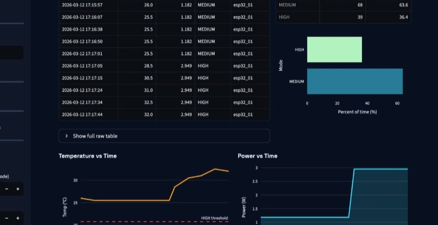

Data Science & Economics student at UC San Diego with an interest in
data analytics, machine learning, and applied economic analysis. I work
with real-world datasets to uncover patterns, build predictive models,
and communicate insights through data.
Competed in IEEE's Quarterly Projects program. Won second place in the quarterly project competition.
IEEE is the international professional society for engineering and technology. The UC San Diego student branch runs Quarterly Projects: you join a team, build a hardware or software prototype in one quarter, and demo it to IEEE mentors and faculty. I was a project member; our team took second place in the competition.
Jun 2025 – Present
DS3 – UC San Diego
Member
Active member of the Data Science Student Society (DS3), engaging with the data science community through projects, workshops, and events.
DS3 (Data Science Student Society) is UC San Diego’s undergraduate data–science club. It’s where students run hands-on projects, attend skills workshops (Python, SQL, tools), and meet peers and recruiters through panels and hackathons—basically the on-campus hub for learning and doing data science outside class.
Apr 2025 – Mar 2026
CALPIRG Students – UC San Diego
Volunteer
Worked with a student-led nonprofit focused on environmental protection, sustainability, and public interest issues. Contributed through data entry, outreach, and campaign organization.
CALPIRG Students is the UC San Diego chapter of CALPIRG, a statewide student nonprofit that works on environmental protection, sustainability, and other public-interest causes. Volunteers help run campaigns—tabling, petitions, events, and tracking outreach—so ideas turn into real campus and community action.
Sept 2024 – Jun 2028
University of California, San Diego
B.S. Data Science & B.A. Economics
Relevant coursework in Data Structures & Algorithms, Principles of
Data Science, Linear Algebra, Programming for Data Science, and Economics.
UC San Diego is where I’m completing a B.S. in Data Science and a B.A. in Economics—so my coursework mixes programming, statistics, and econ theory, with projects that use data to answer real questions.
02. Projects
Jan 2026 – Present
Modeling Housing Affordability Trends in San Jose
Analyzed housing affordability trends in the San Jose MSA using 130+ monthly
observations of home prices, rents, and household income. Built unified
time-series datasets from Zillow and U.S. Census data, applying ARIMA and
SARIMA models for trend evaluation.
PythonpandasNumPyMatplotlibSeaborn
Analyzes long-run affordability in the San Jose MSA by comparing Zillow’s metro-level home values (ZHVI) and rents (ZORI) against U.S. Census median household income (Santa Clara County). Builds a unified time-series (~130 monthly points; income annual) via reshaping wide Zillow tables into long format, interpolating missing values where appropriate, and merging into a single dataset. Key metrics include the home price-to-income ratio and rent burden (annual rent / income). Exploratory work covers trend visualization, growth-rate comparisons, and correlation analysis; forecasting/regression modeling is in progress with chronological train/test splits to assess future affordability risk.

Jan – Mar 2026
Smart Temperature-Controlled Energy Dashboard
Built an IoT monitoring system streaming real-time temperature and power
data from ESP32 microcontrollers to Supabase. Developed an interactive
Streamlit dashboard visualizing power usage, cumulative energy, and
projected device impact with cost-saving analysis.
ESP32ArduinoPythonSupabaseStreamlit
Built an end-to-end, real-time embedded + cloud energy monitoring system using an ESP32, Supabase, and a Streamlit analytics dashboard. The ESP32 reads ambient temperature (°C) and fan power draw (W), fetches weather-informed thresholds, and computes an adaptive operating mode (LOW / MED / HIGH) based on Open‑Meteo conditions (MED = current outdoor temp; HIGH = daily peak − 1°F with minimum separation enforced). Telemetry is streamed to Supabase (PostgreSQL) and visualized in a live dark-mode dashboard that polls data in real time, integrates time-weighted energy usage (kWh), compares against a constant-watt baseline, and estimates cost impact and savings. The UI also summarizes mode distribution and the active weather thresholds; future work includes direct fan actuation (PWM/relay), hysteresis stabilization, and longer-horizon aggregations.
Jan – Mar 2026
Food Delivery Platform Performance Analysis
Analyzed 21,000+ transactions across Grubhub, DoorDash, and FoodHub to
investigate customer satisfaction drivers. Applied t-tests, Mann-Whitney U
tests, and Spearman correlations to compare platform performance on
delivery time, prep time, cost, and ratings.
PythonpandasstatsmodelsSciPySeaborn
Conducted a comparative performance study across three delivery platforms (Grubhub, DoorDash, and FoodHub) using 21,000+ transactions. Built a clean, analysis-ready dataset by normalizing schema across sources, standardizing categorical fields, and addressing missing/outlier values. Explored distributions and platform differences with EDA (histograms/box plots, platform-level summary tables, and relationship plots), then used statistical inference to test hypotheses about customer satisfaction drivers. Applied two-sample t-tests and nonparametric Mann–Whitney U tests for group comparisons, plus Spearman correlations to quantify rank-based associations between operational metrics (delivery time, prep time, cost) and ratings. Wrapped results into a concise set of data-backed recommendations for improving service reliability and protecting customer satisfaction.
WIP
In progress
Swarm · Internship Applier
Automation tooling for internship applications—work in progress. Repository will fill in as the project develops.
WIPGitHub
Swarm is a project I’m building to streamline applying to internships—think scripts or workflows that cut repetitive form-filling and keep materials organized. The repo is early-stage; code and features will show up on GitHub as I implement them.
Past projects
When you swap a project out of the grid, add it here with its GitHub link.
A stats project on the TV show FRIENDS: episode data, ratings, and engagement—exploratory plots, tests, and simple models to see what tracks with audience response.
A recommender built from Taylor Swift’s catalog: audio features plus lyric text, with EDA and a TF‑IDF search so you can search lyrics and get song suggestions in a notebook.
I'm always open to new opportunities, collaborations, and conversations
about data science. Whether you have a question or just want to say hi,
feel free to reach out!